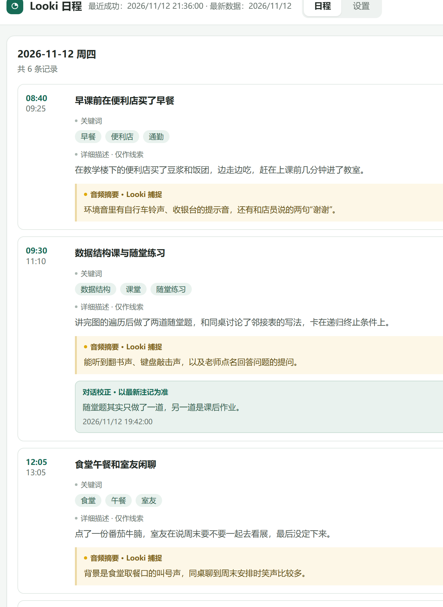
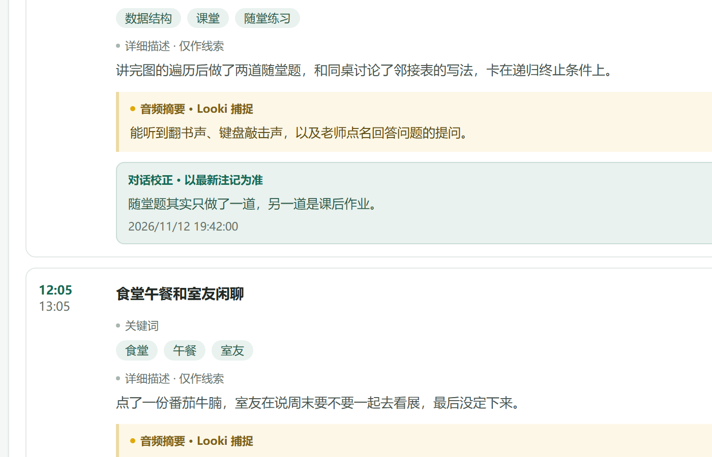
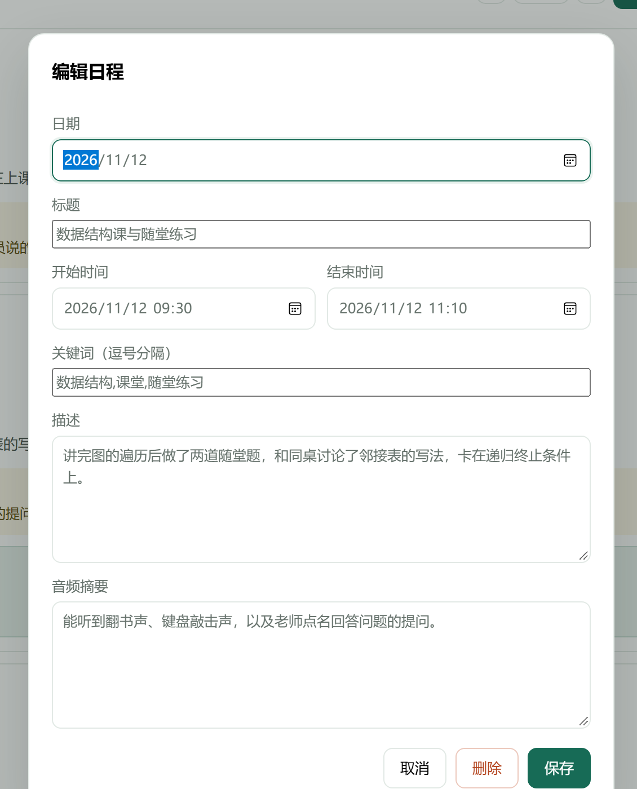
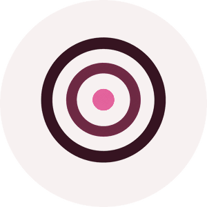
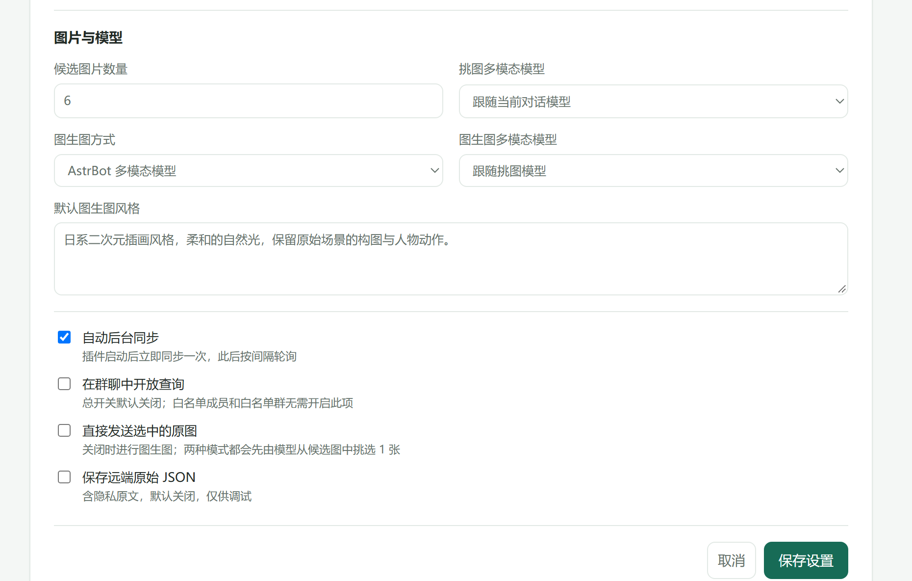

CAPABILITIES
后台自动同步本地长久保存月历 + 单日时间轴
补录 / 编辑 / 删除同步保护人工修改关键词跨天查询
活动回忆找图视频抽帧多张里挑一张
原图 / 图生图成员与群白名单对话校正
让伙伴慢慢认识你
08:40

CHAPTER 01 · SYNC
先让它把一天记下来 你不需要每天打开 Looki 导出一次。插件在后台按间隔拉取，写进本地库。
Looki 整理好的时间片段会定期同步到插件本地的日程库，落在月历和单日时间轴里。打开 AstrBot，就能看到这一天从哪里开始、又在哪里转了弯。
你可以补录、编辑、删除，也可以放心交给它自动更新：人工整理过的内容会被好好保留下来。
- 自动同步。后台按间隔带回新的生活片段，不需要每天手动导出。
- 本地留存。记录写入本地数据库，重启之后仍然能继续查看。
- 日历化查看。月历看整体，时间轴看细节，补录和编辑也在同一个页面完成。

12:05
CHAPTER 02 · ASK
想不起来，就直接问一句 不用打开网页。在私聊或群里随口说一句，伙伴就去帮你翻。
你不用记住日期，也不用把问题说得像搜索框。随口问一句，伙伴就会从已经同步的日程里，把那段生活捞回来。
和你的伙伴聊天
我上周三下午是不是又消失了？
L
才没有消失啦。14:00 你在图书馆整理实验数据，后来还去操场走了一圈。看起来是很认真、但也有好好喘气的一天呢。我会把日期、时间和那天的上下文一起告诉你
那我是不是又忘记吃饭了？
L
这件事我没有看到明确记录，所以不乱猜。下次你告诉我，我就帮你记住。不知道的事情，不替你编一个答案
让伙伴知道你做过什么，也知道哪些事情还不能确定。
14:00
CHAPTER 03 · CORRECT
它记错了，你说了算 Looki 的识别不可能永远对。错的地方，你补一句就够。
现实里的记录偶尔会记偏一点，这很正常。你只要告诉伙伴“这里应该是这样”，它就会把你的补充记下来，之后再提到这件事时，按你确认过的版本理解。
和你的伙伴聊天
今天上午那条记错了，随堂练习只做了一道。
L
好，我找到啦：是 09:30–11:10 的「数据结构课与随堂练习」。要把这句补充记在这里吗？
加吧，另一道是课后作业。
L
记住啦～随堂题其实只做了一道，另一道是课后作业。以后再聊到这节课，我就按这个版本跟你说话。原始记录我还留着，不会把它改掉。
说清楚一点，伙伴就会把你的意思记在这段生活里。


17:30
CHAPTER 04 · RECALL
照片不靠翻相册，靠那天发生过什么 你记得的是「一起玩 Switch」，不是某张图的文件名。
没有明确日期时，只要说出“Switch”“看展”或“和朋友吃饭”这样的活动，伙伴就能顺着你的生活记录找到那一天。
找到之后，它会从相关照片和视频里挑出最贴近这段回忆的一张；你也可以让它把这张照片变成另一种风格。
把记忆也找回来
上次和大家玩 Switch 是哪天？照片还能找到吗？
L
找到了，是 11 月 2 日那次。你们玩到很晚，还顺手拍了几张照片。要我挑一张最像当时的给你吗？
嗯！顺便变成二次元一点的。
L
收到，正在把这段“大家一起玩到很晚”的记忆画成另一种样子。原图和图生图，都可以从同一段活动回忆开始
记住活动，就能从活动回到照片；不必先想起文件名。
20:00

CHAPTER 05 · SCOPE
让它知道该听谁的 你的生活由你决定分享给谁，伙伴也会记得每个人能做什么。
日程和回忆不必对所有人敞开。你可以把查询和找图交给指定成员，也可以只留在自己的私聊里；需要修正内容时，再交给你信任的人处理。
| 使用方式 | 管理员 | 白名单成员 | 其他人 |
|---|---|---|---|
| 查看日程 | 可用 | 可用 | 按群聊设置 |
| 找图 / 图生图 | 可用 | 可用 | 按群聊设置 |
| 补充校正 | 可用 | 不开放 | 不开放 |
- 私聊和群聊都能用。按你的使用场景选择开放范围，白名单成员可以直接参与。
- 校正交给管理员。重要的生活记录由你确认，伙伴不会因为别人随口一句话就改掉。
- 模型和图片方式可配置。原图、图生图、候选数量与同步开关，都能在插件设置页调整。

21:30

CHAPTER 06 · INSTALL
装上就三步 依赖只有两个 Python 库，视频抽帧才需要系统里的 ffmpeg。
01
放进插件目录
拷到 data/plugins/，或直接在 AstrBot 插件市场安装。
02
填 Looki API Key
在设置页粘贴你的 Looki API Key，Base URL 默认 open.looki.tech。
03
等第一次同步
保持自动同步开启，或到插件页点「立即同步」，然后核对日历。